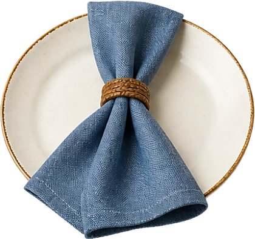
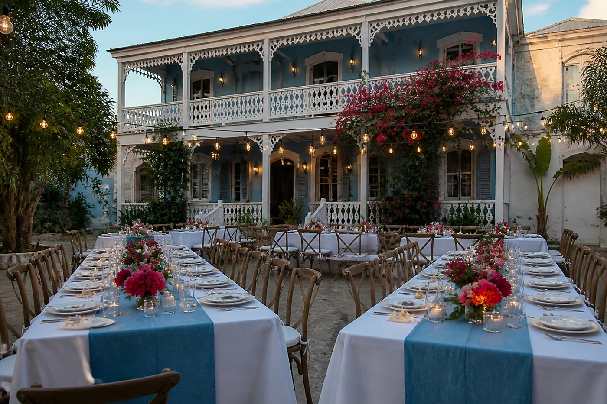
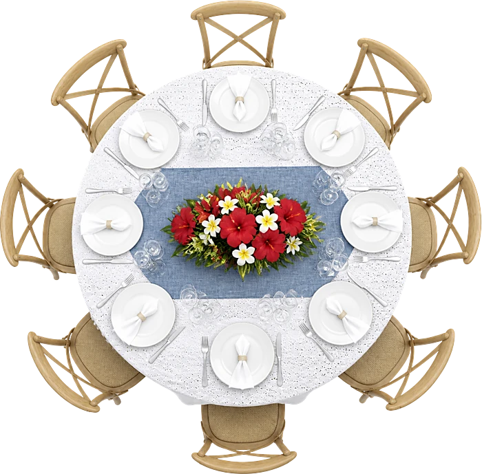
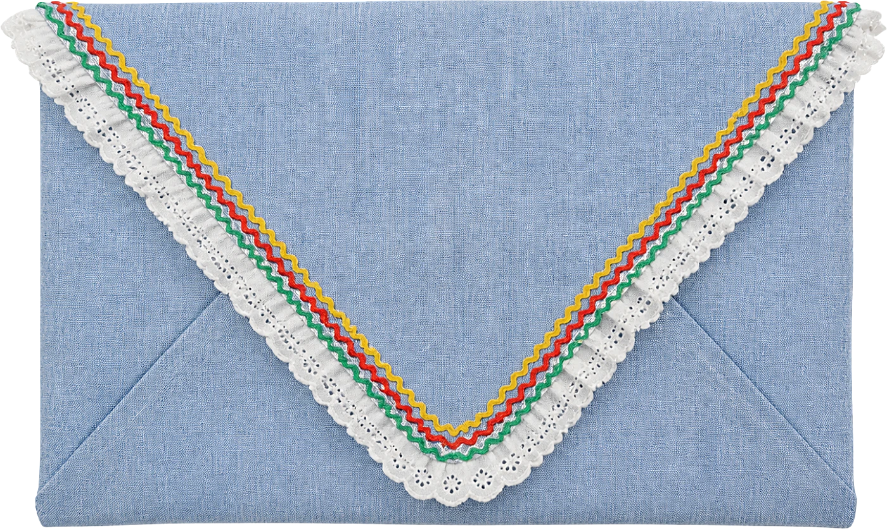

MariageFabienne&Stanley14 · 08 · 2027
MariageFabienne&Stanley14 · 08 · 2027
Ils se sont rencontrés à la fête de fin d'été d'une amie commune, sous un flamboyant en fleurs.
Fabienne & Stanley
Le programme
Samedi 14 août 2027
- 16 h 00Cérémonie dans la cour
- 17 h 00Cocktail sous le flamboyant
- 18 h 30Bouquet et photos

19 h 30Dîner sous les galeries- 21 h 30Première danse et bal
- 23 h 30Gâteau des mariés



Le lieu
Maison des Galeries
Jacmel
Tenue
Cocktail d’été
Tenue de cocktail légère : blanc, bleu, sable, une touche de corail. Ceux qui le souhaitent peuvent glisser un clin d'œil à la karabela, broderie ou chambray, sans aucune obligation.

Il reste
--jours
--heures
--minutes
Votre réponse
Merci de répondre avant le 1er juillet 2027.
Je serai présent·eJe ne pourrai pas venir